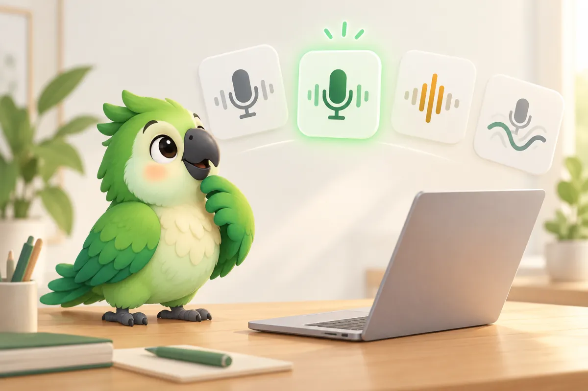
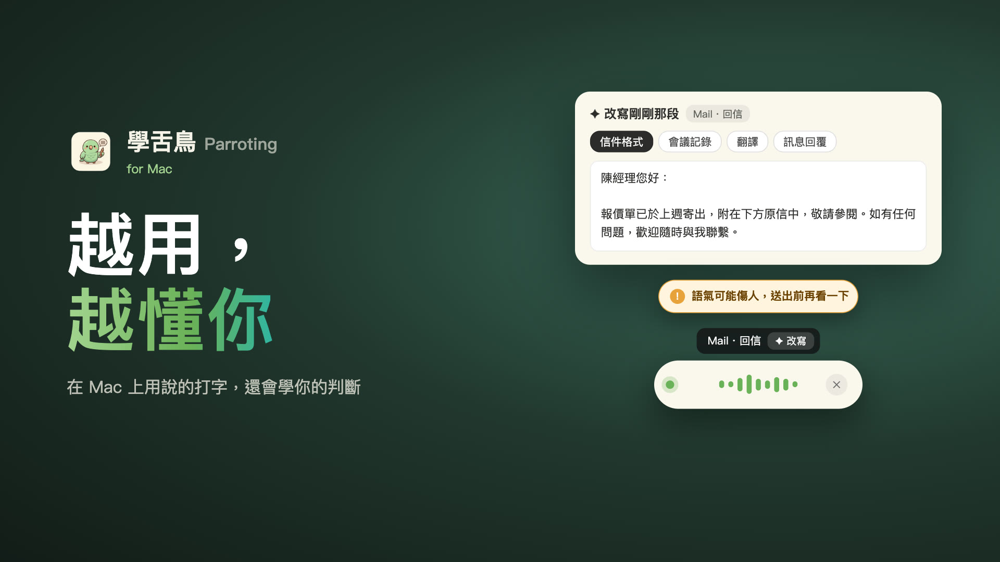

Parroting Journal
Mac 使用技巧與效率工具
從真實使用情境出發，分享語音輸入、文字溝通與 Mac 工作方法。

Mac · 2026-10-31
Typeless 替代方案：7 款 Mac 語音輸入比較（繁體中文、免費、本機處理）
想找 Typeless 的替代或平替？比較 Wispr Flow、Superwhisper、VoiceInk、Handy、OpenWhispr、macOS 聽寫與學舌鳥的價格、繁體中文、本機處理與隱私。
閱讀全文 →
Mac · 2026-10-27
Mac 中文語音輸入怎麼用？從內建聽寫到 AI 整理與翻譯
Mac 中文語音輸入完整教學：比較系統內建聽寫與學舌鳥，了解語音輸入、口語整理、翻譯、語氣提醒及個人詞典。
閱讀全文 →